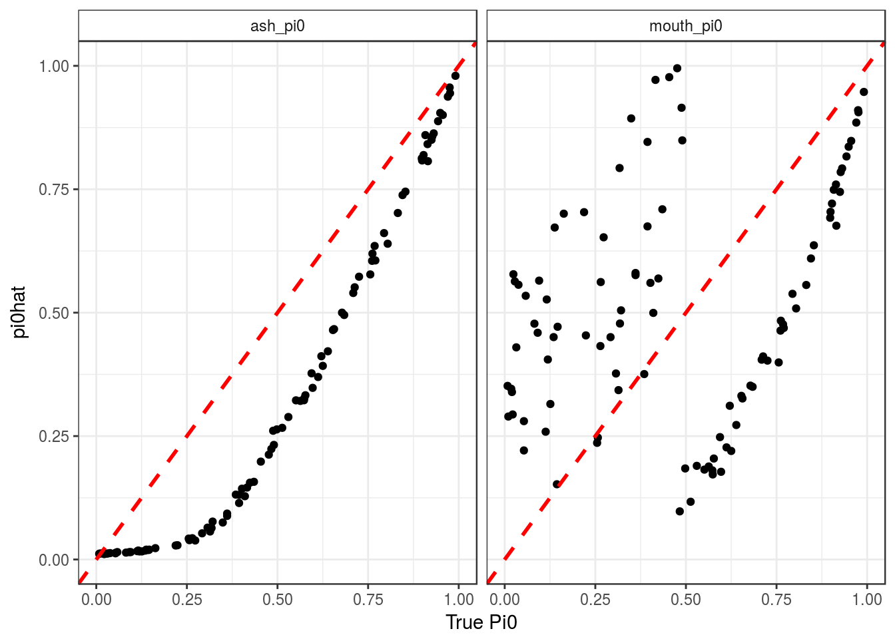
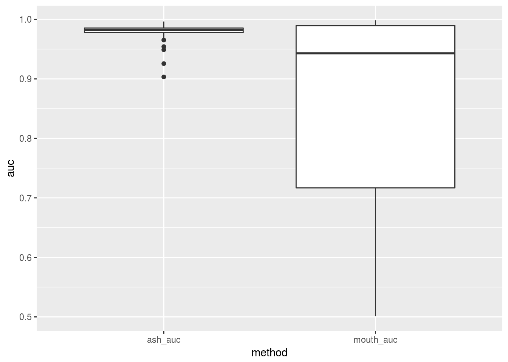
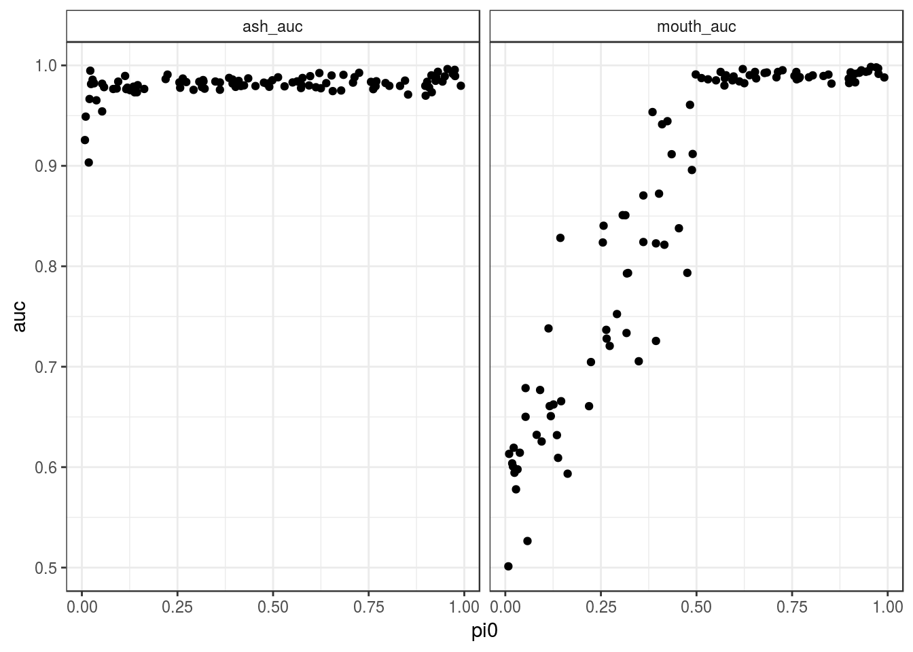

I try the same as code as in single cell bimodal signal here but with bulk GTEx data.
MOUTHWASH works fine here. So I it might also have something to do with the number of zeros.
It turns out it is the zeros.
library(vicar)
library(sva)
library(ashr)
library(limma)
library(pROC)
library(seqgendiff)
library(tidyverse)hdat <- as.matrix(read.csv("../data/heart.csv")[, -c(1, 2)])
hrm <- rowMeans(hdat)
hdat <- hdat[hrm > 2, ]
hrm <- hrm[hrm > 2]
order_vec <- order(hrm, decreasing = FALSE)
hdat <- hdat[order_vec[1:1000], ]
load("../data/counts-allgenes-bimodal.rda")
mean(counts_allgenes_bimodal[[1]]$counts == 0)## [1] 0.4515mean(hdat == 0)## [1] 0.3884Signal generation function. I fiddled with the signal to get AUC comparable with that seen in the SC data.
## signal function
gen_beta <- function(n, pi0) {
beta <- sample(x = c(-2, 2, 0), prob = c((1 - pi0) / 2, (1 - pi0) / 2, pi0 ), replace = TRUE, size = n)
return(beta)
}num_dat <- 100
result_mat <- matrix(NA, nrow = num_dat, ncol = 7)
colnames(result_mat) <- c("true_pi0", "ash_pi0", "mouth_pi0", "ash_auc",
"mouth_auc", "ash_mse", "mouth_mse")
for (index in 1:num_dat) {
cat("Index:", index, "\n")
true_pi0 <- runif(1)
simdat <- poisthin(mat = t(hdat), nsamp = 100, ngene = 1000, prop_null = 0,
signal_fun = gen_beta, signal_params = list(pi0 = true_pi0))
count_mat <- t(simdat$Y)
Y <- log2(count_mat + 1)
X <- simdat$X
colnames(X) <- c("Intercept", "Treatment")
beta <- simdat$beta
is_null <- abs(simdat$beta) < 10 ^ -12
## deal with some all zero columns of counts ----------------
if (any(apply(Y, 1, sd) < 10 ^ -12)) {
which_good <- apply(Y, 1, sd) > 10 ^ -12
Y <- Y[which_good, ]
beta <- beta[which_good]
is_null <- is_null[which_good]
count_mat <- count_mat[which_good, ]
}
## MOUTHWASH -------------------------------------
suppressMessages(mout <- mouthwash(Y = t(Y), X = X, cov_of_interest = 2))
## SVA + VOOM + LIMMA + EBAYES -------------------
trash <- capture.output(sout <- sva(dat = Y, mod = X, X[, 1, drop = FALSE]))
Xsv <- cbind(X, sout$sv)
vout <- voom(counts = count_mat, design = Xsv)
lmout <- lmFit(vout)
ebout <- ebayes(fit = lmout)
betahat <- lmout$coefficients[, 2]
sebetahat <- sqrt(ebout$s2.post) * lmout$stdev.unscaled[, 2]
degrees_freedom <- ebout$df.total[1] ## same for all indices, so choose first
suppressMessages(ashout <- ashr::ash(betahat = betahat, sebetahat = sebetahat, df = degrees_freedom))
## LFDR's -----------------------------------------
alfdr <- get_lfdr(ashout)
mlfdr <- get_lfdr(mout)
## posterior means --------------------------------
apm <- get_pm(ashout)
mpm <- get_pm(mout)
## Put into result_mat ---------------------------
result_mat[index, 1] <- mean(is_null)
result_mat[index, 2] <- get_pi0(ashout)
result_mat[index, 3] <- get_pi0(mout)
if (length(unique(is_null)) == 2) { ## deal with situations of all genes are null
result_mat[index, 4] <- auc(predictor = alfdr, response = is_null)
result_mat[index, 5] <- auc(predictor = mlfdr, response = is_null)
}
result_mat[index, 6] <- mean((apm - beta) ^ 2)
result_mat[index, 7] <- mean((mpm - beta) ^ 2)
}
write.csv(result_mat, "../output/thin_bulk_bimodal_results.csv", row.names = FALSE)result_mat <- read.csv("../output/thin_bulk_bimodal_results.csv")as_data_frame(result_mat) %>%
select(true_pi0, ash_pi0, mouth_pi0) %>%
gather(key = method, value = pi0hat, ash_pi0, mouth_pi0) ->
longdat
pl <- ggplot(data = longdat, mapping = aes(x = true_pi0, y = pi0hat)) +
facet_grid(.~method) +
geom_point() +
theme_bw() +
theme(strip.background = element_rect(fill = "white")) +
geom_abline(slope = 1, intercept = 0, lty = 2, col = 2, lwd = 1) +
ylim(0, 1) +
xlim(0, 1) +
xlab("True Pi0")
print(pl)
Plot AUC boxplots
as_data_frame(result_mat) %>%
select(contains("auc"), true_pi0) %>%
gather(key = "method", value = "auc", contains("auc")) ->
longdat
ggplot(data = longdat, mapping = aes(x = method, y = auc)) +
geom_boxplot()
AUC vs Pi0
ggplot(data = longdat, mapping = aes(x = true_pi0, y = auc)) +
facet_grid(.~method) +
geom_point() +
theme_bw() +
theme(strip.background = element_rect(fill = "white")) +
xlab("pi0") +
ylab("auc")
sessionInfo()## R version 3.3.2 (2016-10-31)
## Platform: x86_64-pc-linux-gnu (64-bit)
## Running under: Ubuntu 16.04.3 LTS
##
## locale:
## [1] LC_CTYPE=en_US.UTF-8 LC_NUMERIC=C
## [3] LC_TIME=en_US.UTF-8 LC_COLLATE=en_US.UTF-8
## [5] LC_MONETARY=en_US.UTF-8 LC_MESSAGES=en_US.UTF-8
## [7] LC_PAPER=en_US.UTF-8 LC_NAME=C
## [9] LC_ADDRESS=C LC_TELEPHONE=C
## [11] LC_MEASUREMENT=en_US.UTF-8 LC_IDENTIFICATION=C
##
## attached base packages:
## [1] stats graphics grDevices utils datasets methods base
##
## other attached packages:
## [1] dplyr_0.5.0 purrr_0.2.2.2 readr_1.0.0
## [4] tidyr_0.6.1 tibble_1.3.3 ggplot2_2.2.1
## [7] tidyverse_1.1.1 seqgendiff_0.1.0 pROC_1.9.1
## [10] limma_3.26.9 ashr_2.0.5 sva_3.18.0
## [13] genefilter_1.52.1 mgcv_1.8-17 nlme_3.1-131
## [16] vicar_0.1.6
##
## loaded via a namespace (and not attached):
## [1] Biobase_2.30.0 httr_1.2.1 jsonlite_1.5
## [4] splines_3.3.2 foreach_1.4.3 modelr_0.1.0
## [7] assertthat_0.2.0 stats4_3.3.2 yaml_2.1.14
## [10] RSQLite_1.1-2 backports_1.0.5 lattice_0.20-34
## [13] digest_0.6.12 rvest_0.3.2 colorspace_1.3-2
## [16] htmltools_0.3.6 Matrix_1.2-8 plyr_1.8.4
## [19] psych_1.6.12 XML_3.98-1.8 broom_0.4.2
## [22] haven_1.0.0 xtable_1.8-2 scales_0.4.1
## [25] annotate_1.48.0 IRanges_2.4.8 BiocGenerics_0.16.1
## [28] lazyeval_0.2.0 mnormt_1.5-5 survival_2.41-2
## [31] magrittr_1.5 readxl_0.1.1 memoise_1.1.0
## [34] evaluate_0.10.1 doParallel_1.0.10 MASS_7.3-45
## [37] xml2_1.1.1 forcats_0.2.0 foreign_0.8-67
## [40] truncnorm_1.0-7 tools_3.3.2 hms_0.3
## [43] stringr_1.2.0 S4Vectors_0.8.11 munsell_0.4.3
## [46] AnnotationDbi_1.32.3 rlang_0.1.1 grid_3.3.2
## [49] iterators_1.0.8 labeling_0.3 rmarkdown_1.6
## [52] gtable_0.2.0 codetools_0.2-15 DBI_0.6
## [55] reshape2_1.4.2 R6_2.2.2 lubridate_1.6.0
## [58] knitr_1.16 rprojroot_1.2 stringi_1.1.2
## [61] pscl_1.4.9 parallel_3.3.2 SQUAREM_2016.8-2
## [64] Rcpp_0.12.12This R Markdown site was created with workflowr